SCATS in animations
Thirteen short, looping animations that build SCATS up one idea at a time, in lecture order. Each one has a plain-language explanation and the numbers to look for. No maths beyond arithmetic. The GIFs also work in PowerPoint: right-click to save any of them.
Foundation · signal words
1One cycle, second by second
A signal shares the junction by giving each phase a turn. One round of all phases is the cycle. Between greens comes the intergreen (amber + all-red): nobody moves, so it is lost time. How the remaining green is shared is the split.
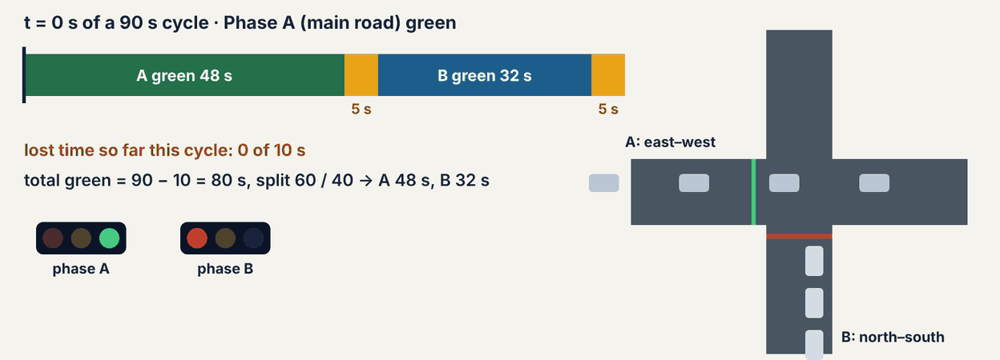
90 s cycle − 2 × 5 s intergreen = 80 s of green; split 60/40 gives 48 s and 32 s. Lost time 10 s = 11% of a 90 s cycle (17% of a 60 s cycle).
Foundation · two levels of control
2Waiters every second, a manager every cycle
Tactical control runs in the roadside controller every second: it ends empty greens early (gap-out), skips phases nobody wants and serves buses. Strategic control runs in the regional computer once per cycle: it measures how well each green was used and sets the cycle length, split plan and offset plan.
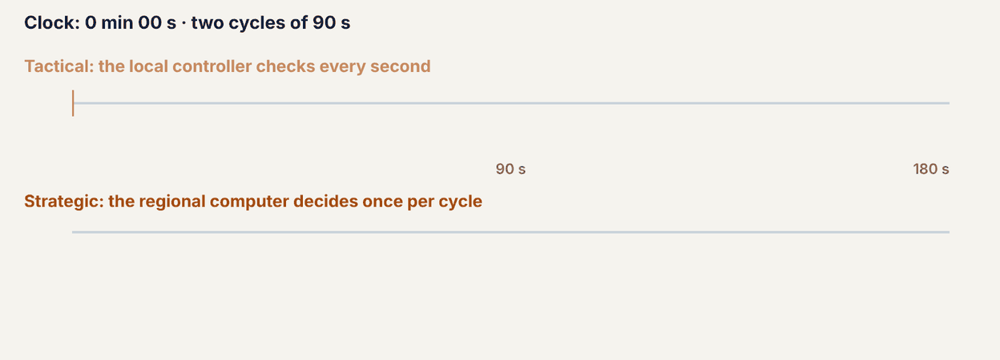
With a 90 s cycle: 40 strategic decisions an hour, each backed by 90 second-by-second checks.
Foundation / Advanced · tactical control
3Gap-out: end the green when the cars stop coming
After the minimum green, every car crossing the stop-line loop restarts a short gap timer. If the timer reaches its setting, nobody is coming: the green ends early and the unused time goes to the next phase.
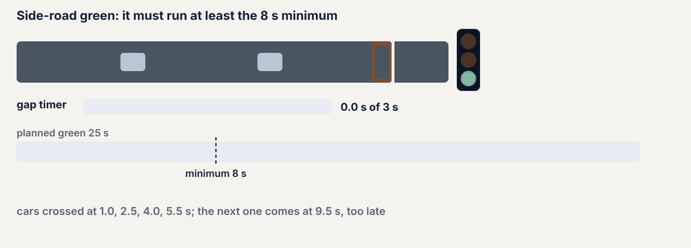
Gap-out at 8.5 s; 16.5 s of empty green passed to the main road. The car arriving at 9.5 s waits for the next cycle.
Foundation · measuring demand
4The normal gap h, then wasted green
Even a packed queue leaves a small empty-loop time between cars: the standard space time h. Any gap longer than h is green that nobody used.
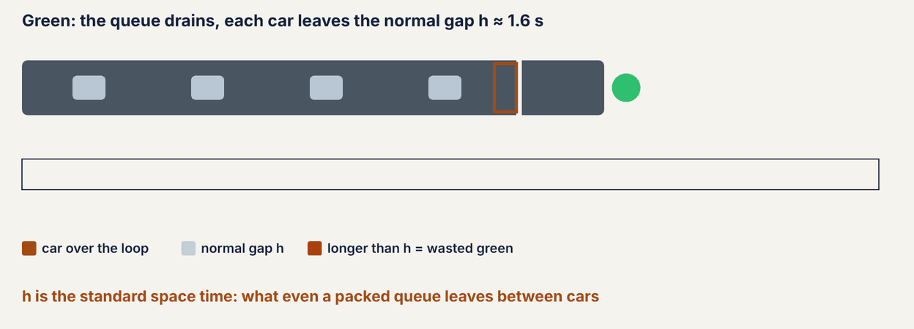
h ≈ 1.6 s (measured 1.62 s in the lab). A 6.0 s gap = 1.6 s normal + 4.4 s wasted.
Foundation · degree of saturation
5Grading one green: the degree of saturation (DS)
During each green SCATS adds up how long the loop sat empty (T) and counts the cars (n). Normal gaps are n × h; anything beyond is wasted. The rest is used green, and DS is the share of the green that was used.
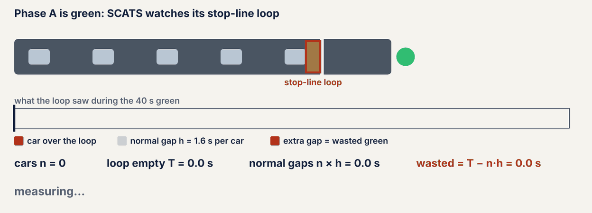
g = 40 s, T = 20 s, n = 10, h = 1.6 s → wasted 20 − 16 = 4 s → used 36 s → DS = 0.90, right at the usual target.
Foundation · what DS means
6Three approaches, three grades
Low DS means the green was largely wasted; about 0.9 means well used with a small safety margin; about 1 or more means no spare gaps and cars still waiting when the green ends.
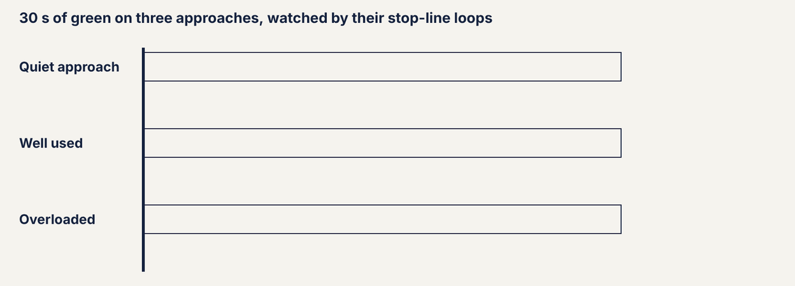
Low DS → give green away or shorten the cycle · DS ≈ 0.9 → keep · DS ≥ 1 → more green or a longer cycle (up to +9 s).
Advanced · subsystems
7The critical intersection
Signals that must stay coordinated form a subsystem and share one cycle. The busiest junction is the critical intersection (CI); its DS sets the cycle for all of them, while each keeps its own split and offset.
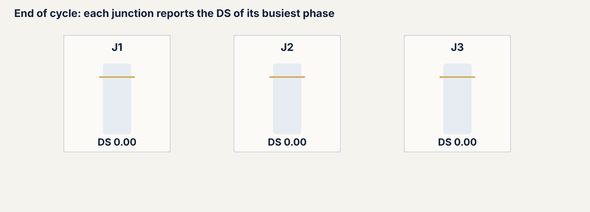
Next cycle for all three: 80 × 0.91 ÷ 0.9 ≈ 81 s.
Foundation / Advanced · strategic decision 1
8Cycle length: small steps towards DS 0.9
SCATS works out the cycle that would have given DS 0.9 (desired = cycle × DS ÷ 0.9) but moves only part of the way each cycle, within a minimum and maximum cycle.
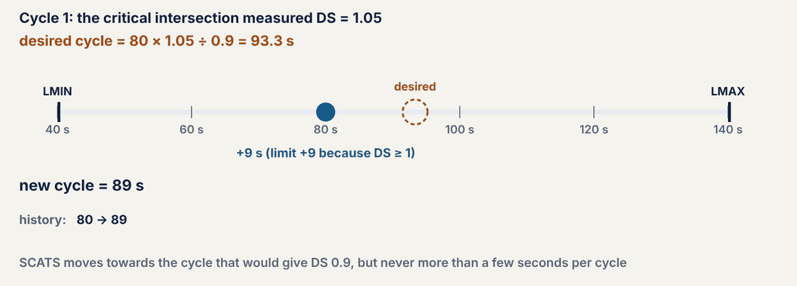
80 s with DS 1.05 → desired 93.3 s → +9 s (DS ≥ 1) → 89 s; then DS 0.97 → +6 s → 95 s; DS 0.90 → hold. Limits in the lab: +6 s (+9 s if DS ≥ 1), −6 s, between 40 and 140 s.
Advanced · strategic decision 2
9Split plans: predict, compare, vote
For each stored split plan, SCATS predicts each phase’s DS (measured DS × green now ÷ green in the plan). The best plan is the one whose worst phase is lowest, and it must win 2 of the last 3 cycles before it goes into service.
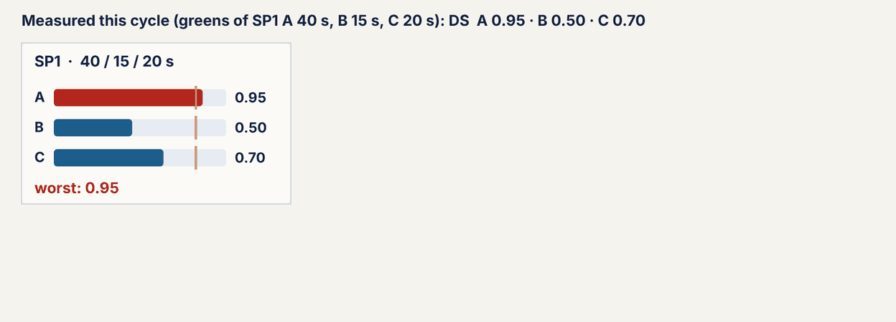
Worst phase: SP1 0.95 · SP2 0.84 · SP3 1.09 → SP2 moves 5 s to the overloaded main road.
Advanced · strategic decision 3
10Offsets: from stop-and-go to a green wave
The offset is when a junction’s cycle starts compared with the reference. Setting each offset to the travel time from the previous junction lets a platoon ride a wave of greens. SCATS chooses among stored offset plans and needs 4 of the last 5 votes to change.
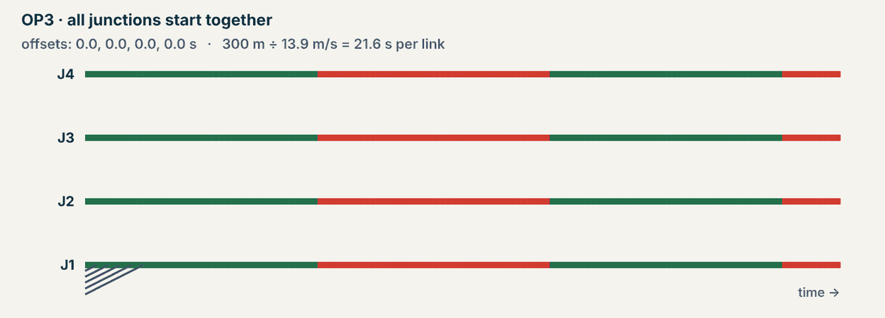
300 m ÷ 13.9 m/s = 21.6 s per link. OP3 (all together): 6 stops at J3 · OP1 (0, 21.6, 43.2, 64.7 s): no stops.
Advanced · linking subsystems
11Marriage and divorce
Two neighbouring subsystems marry (run one common cycle) when enough traffic flows between them, and divorce when it drops. Different on/off thresholds plus three votes in a row stop them flip-flopping.
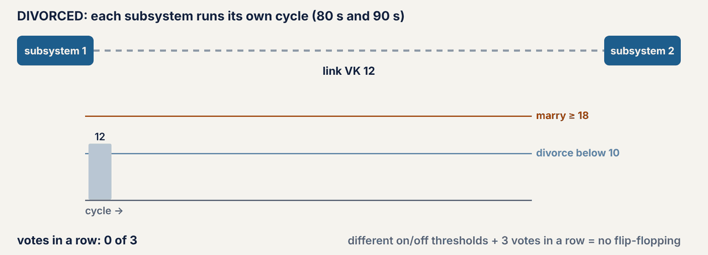
Marry at link VK ≥ 18, divorce below 10, 3 votes in a row → married at cycle 8, divorced at cycle 15.
Advanced · public transport priority
12A late bus under low, medium and high priority
A bus arrives 2 s after its green ended. Higher priority saves the bus more time but costs the side road more, which is why buses usually get medium priority and trams or emergency vehicles high.
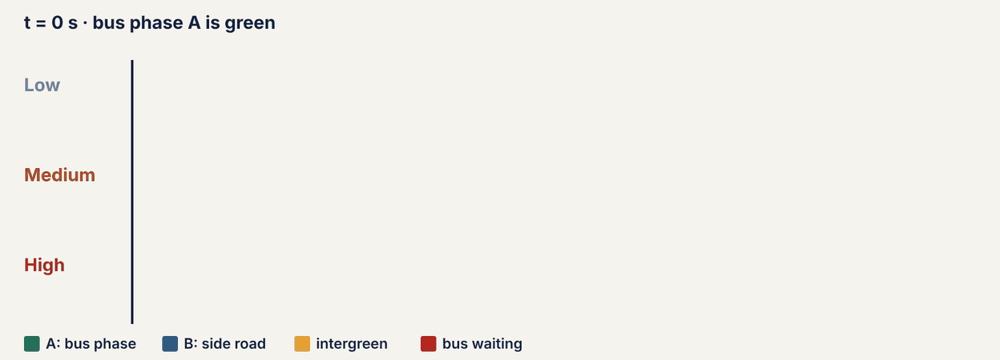
Low: waits 38 s · Medium (B cut to its minimum): 18 s · High (B skipped): 3 s.
Foundation / Mastery · calibration
13Why h must be calibrated
With the same green and the same cars, only the value of h changes. A bigger h counts more empty time as normal, so less looks wasted and DS rises; a smaller h does the opposite. Every cycle, split and offset decision inherits the error.
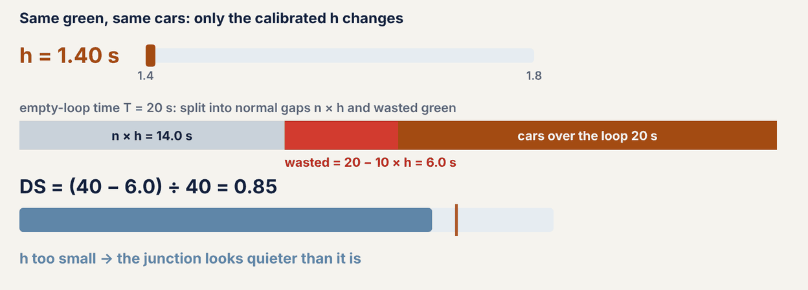
h 1.4 s → DS 0.85 · h 1.6 s → 0.90 · h 1.8 s → 0.95. Measure h (and MF) on site.
Numbers are the course’s teaching values from the Foundation and Advanced levels and their SUMO labs; each real SCATS installation is configured for its own site. Next: try the simulators in Foundation, the DS workbench or the quiz bank.